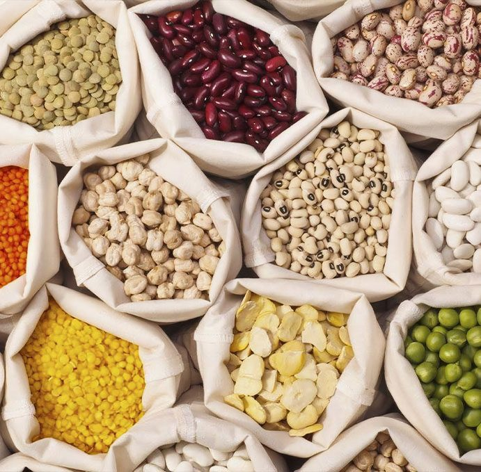

01 — Agricultural Goods
Grains, pulses and oilseeds
As specialists in agricultural exports, we facilitate the global trade and distribution of high-quality grains, pulses, oilseeds and their processing products. We are focused on long-term cooperation and operate with an absolute commitment to quality, with cargo supervision by leading survey companies on every shipment.
- Grains & cereals: corn, barley, wheat and oats.
- Pulses & legumes: chickpeas, green and yellow peas, lentils.
- Oilseeds: sunflower, flax, safflower and mustard seed.
- Processing products: meals, oils and by-products.
Full export documentation, quality certificates and professional cargo surveys are prepared as standard.